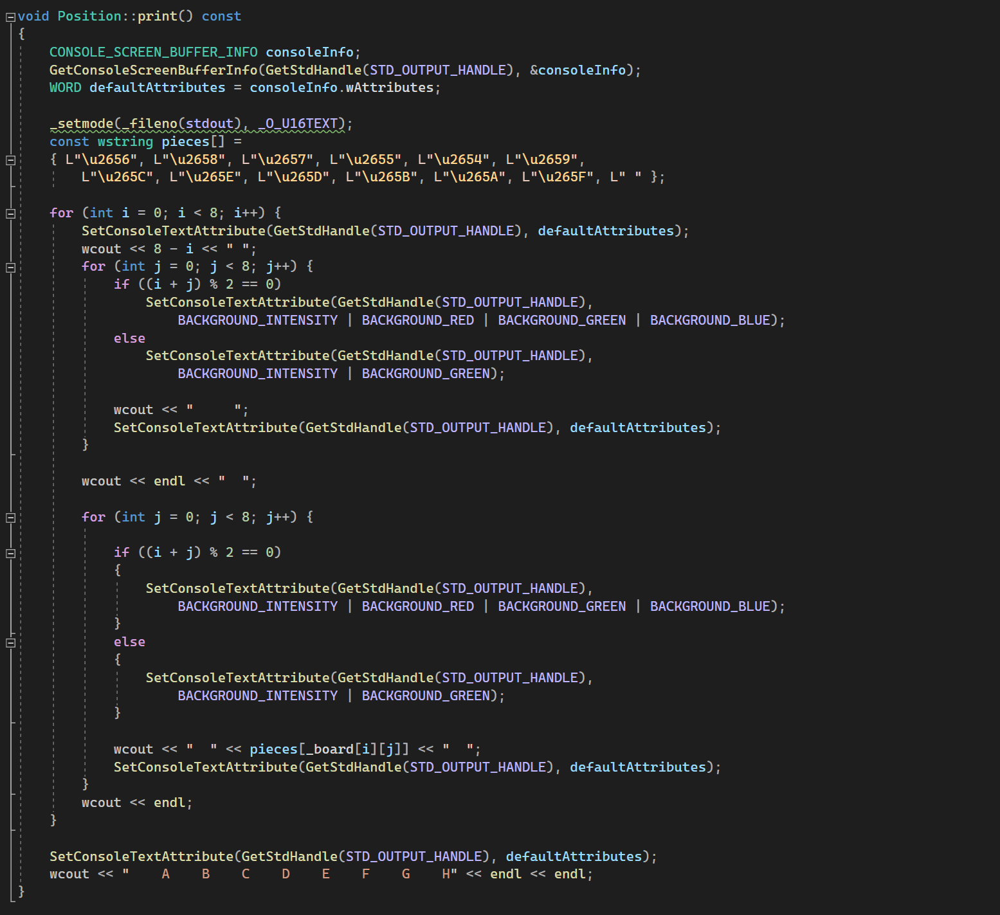

This is a recursive Minimax algorithm for evaluating moves in a game. It generates legal moves, checks for terminal conditions (game over or depth limit), and recursively evaluates future positions. It selects the best move for the current player (WHITE maximizes, BLACK minimizes) and returns the optimal move and its value.
This function prints a chessboard to the console with Unicode chess pieces. It sets console text attributes to create a checkerboard pattern and displays the board with row and column labels. Unicode symbols represent pieces, and colors differentiate squares.